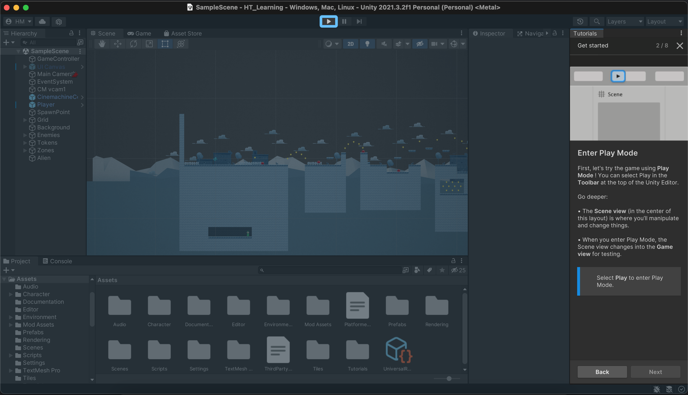
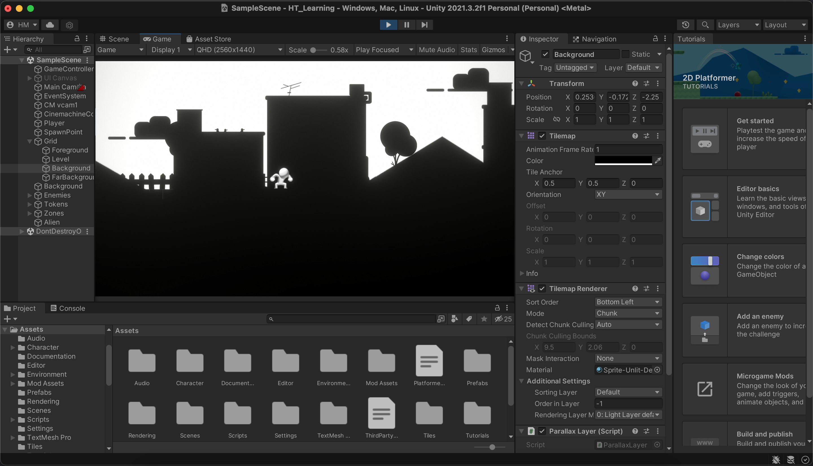
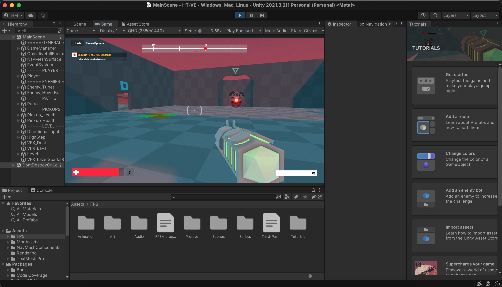
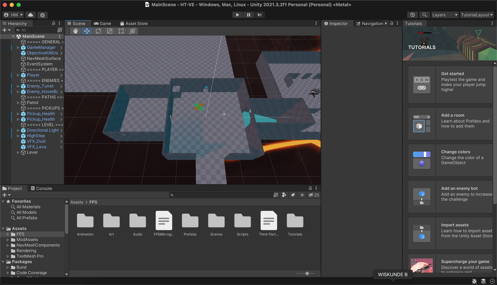
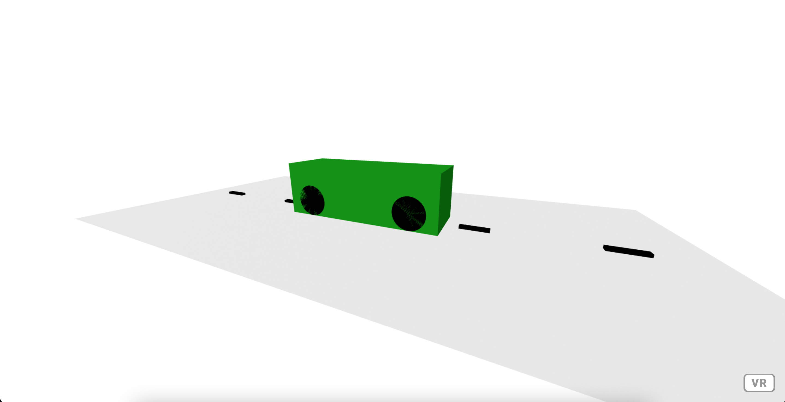

De eerste paar opdrachten was het installeren en verkennen van Unity. We moesten twee micorgames tutorials volgen. Ik heb gekozen voor de 2D platform mario achtige game en de simpele first person shooter spel.
De 2D platform spel heb ik een beetje mee geexperimenteerd. Dat zie je aan de kleuren. De fps spel was op mijn computer aardig langzaam het bewoog af en toe op 1 frame per seconde, maar het was wel voor een paar minuten grappig
en even leuk om mee te experimenteren




opdracht 2 stap 6
Bij deze opdracht moest ik gaan werken in Aframe. Ik moest experimenteren met vormen. Uiteindelijk heb ik een blok mmet auto gemaakt
die een auto moet voorstellen. Het blok bestaat uit 4 cirkels die als autowiel dienen. Verder zie je een autoweg als ondergrond met een aantal strepen die ervoor zorgen
dat het ook echt op een weg lijkt.

Opdracht 4 stap 7
Bij deze opdracht heb ik moeten experimenteren met de animaties. Ik heb een roterende tekst gemaakt en het houte blok bewegend gemaakt.